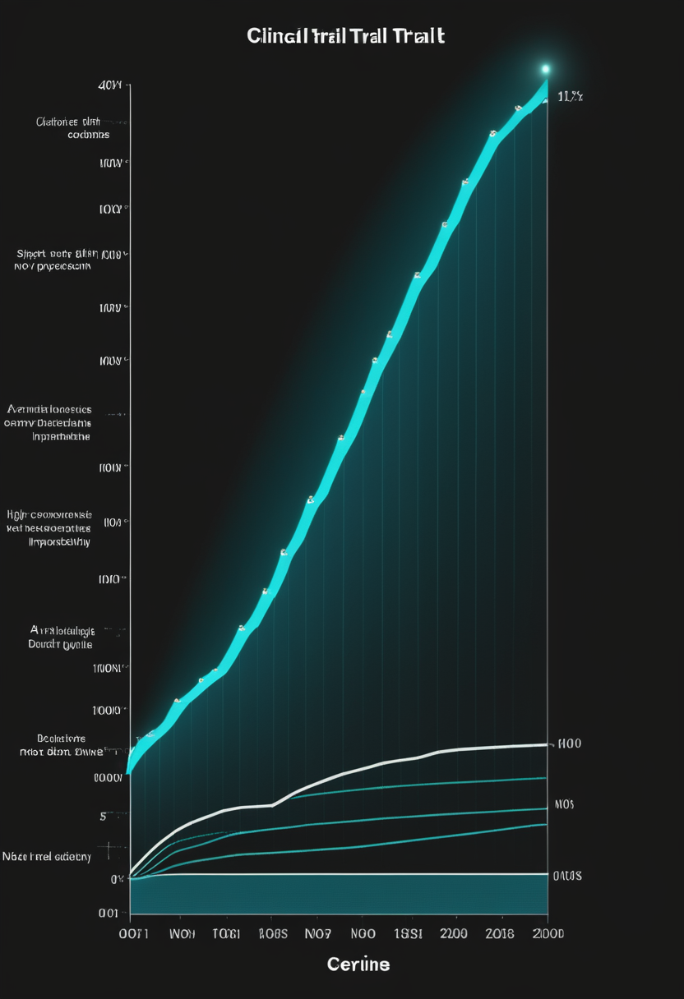
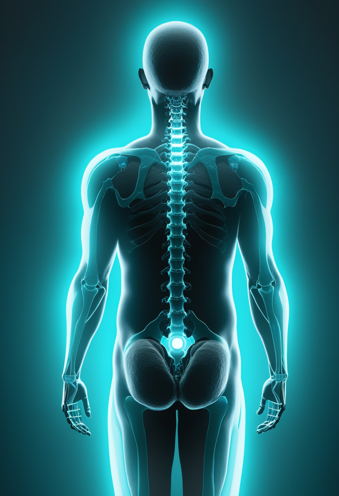
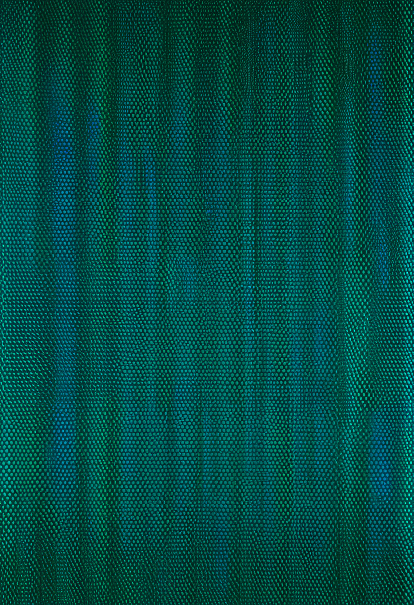
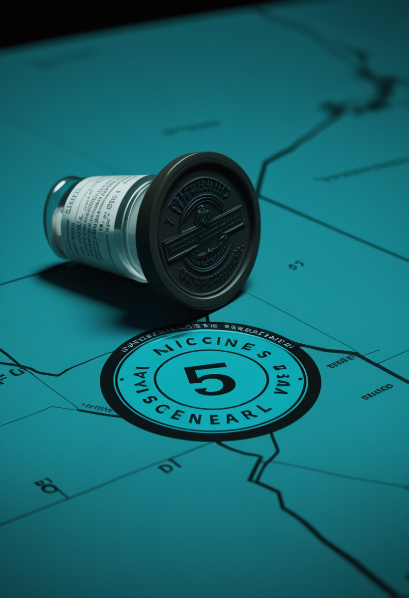
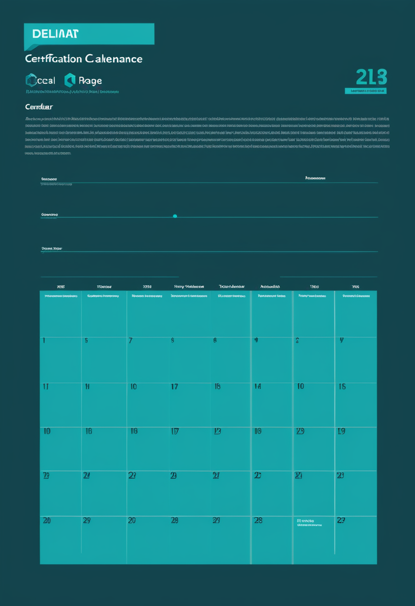
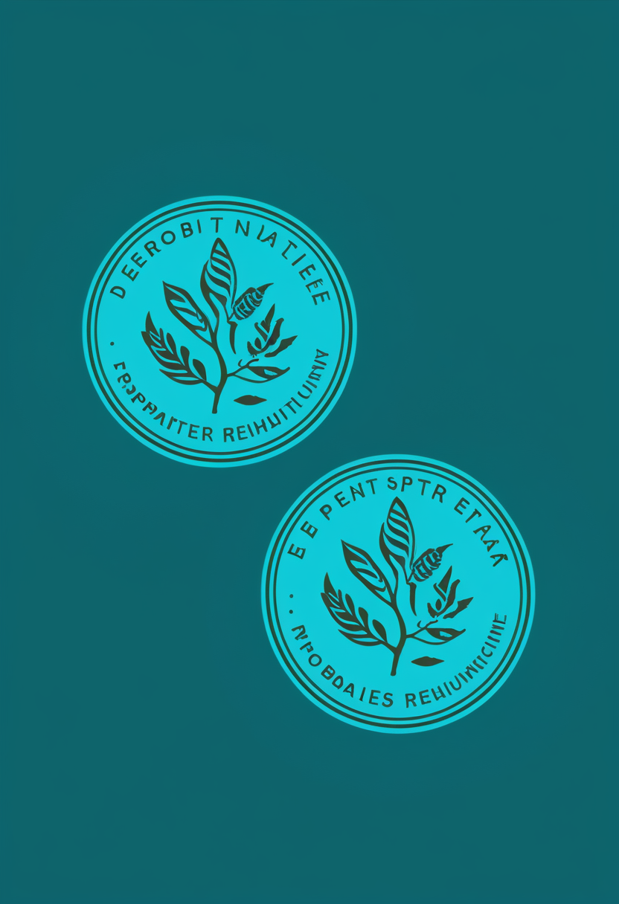
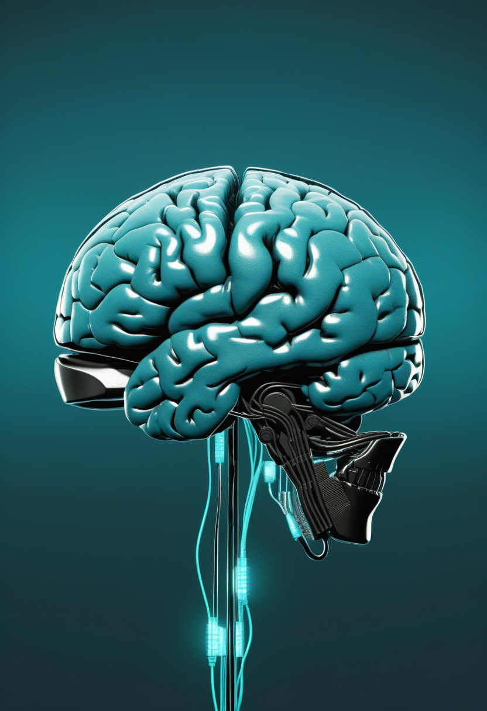

月曜日の便り。8月30日午前7時26分(米東部夏時間、日本時間20時26分)、NASAのナンシー・グレース・ローマン宇宙望遠鏡がケネディ宇宙センターLC-39Aからファルコン・ヘビーで打ち上げられ、成功した ― 分離は31分後、太陽電池パドルと日除けの展開は1時間23分後、行き先はL2まで約3カ月、最初の画像は2027年初頭の見込みである。コンゴ民主共和国のエボラは、WHO第616報(8月26日時点)が確定5,794例・死亡2,786人・保健区60を公式に追認し、ウガンダは42日間新規例なしで終息が宣言され、Ervebo接種が前線従事者向けに始まった。米国の麻疹は排除認定の審査そのものが遅れ、CDCのデータ更新も止まったままである。自由の章では、ALS患者の在宅BCI利用が3,800時間・transformerデコーダで単語正解率99.2%に達し、中国語の実時間復号や視距離に応じた視線入力の改良が並んだ。命の章では、SAPPHIREのHFMSE差1.8点という数字の中身と、高用量ヌシネルセン承認からNHS恒久給付まで、既存治療の広がりを伝える。畏敬の章はローマンの成功に加え、銀河中心近くで検出された水、FDAの二つの「初」承認、量子誤り訂正の二つの道を並べた。美の章では、全脳エミュレーションが「最低30〜40年」先だとする見積もりと、AI福祉の議論が会議と教科書という制度の形を取り始めたことを伝える。
8/30号の続報 ― 昨日の本紙は「今夜20時26分」と書いた。その時刻に、NASAのナンシー・グレース・ローマン宇宙望遠鏡は実際に飛んだ。8月30日午前7時26分(米東部夏時間、日本時間20時26分)、ケネディ宇宙センターLC-39Aからファルコン・ヘビーで打ち上げ。上昇中に追跡・データ中継衛星を介して通信がつながり、約7分後にはゴダード宇宙飛行センターの管制がテレメトリを受け取って全系統正常を確認した。7時57分、打ち上げから31分後に第2段から分離して自力飛行に入り、1時間23分後に太陽電池パドルと下部の日除けが開いた。この日除けは電力を生むと同時に熱の盾でもあり、L2までの旅路で望遠鏡を冷たく保つ。行き先は地球から約150万km、到達までおよそ3カ月、最初の画像は2027年初頭の見込みである。特筆すべきは日程だ ― 正式なコミット日は2027年5月であり、9カ月早い。報道によれば、この計画は3度の中止提案と4度目の予算削減の脅威を生き延びている。打ち上げ前の本紙が書けたのは好天確率60%までだった。書けなかった部分が、昨夜のうちに埋まった。

9月30日のFDA判断まで、本日から30日。その判断の根拠になった第3相SAPPHIREの結果が、Lancet Neurologyに掲載された。主要評価の対象は2〜12歳で、運動機能の指標であるHFMSE(ハマースミス機能運動尺度・拡張版)のベースラインからの変化量について、プラセボとの平均差は1.8点(P=0.0192)だった。もう一つの見方として、3点以上の改善に達した割合はアピテグロマブ群30.4%に対しプラセボ群12.5%である。ここで見落とせないのは、参加者が全員、SMNを標的とする既存治療を継続していたことだ ― つまりこの効果は、現行治療の上に積み増された分である。MDA 2026で示された追加解析では、治療開始が早い人ほど改善幅が大きい傾向が見られた。1.8点という数字は絶対値としては小さく見えるが、SMAの自然経過が緩やかな悪化であることを踏まえると、維持ではなく改善が出た点に意味がある。安全性は全般に良好で忍容されたと報告されている。

アピテグロマブの判断ばかりが注目されるが、2026年は既存治療の側でも選択肢が広がった年である。FDAは3月30日、ヌシネルセン(スピンラザ)の高用量レジメンを承認した ― 同じ薬剤で用量設計を変えることによる上積みを狙うもので、既存治療をどう最適化するかという問いへの一つの答えである。2025年11月には髄腔内投与のオナセムノゲン アベパルボベク(Itvisma)が2歳以上に承認され、遺伝子補充療法が乳児期の外へ広がった。従来のゾルゲンスマは静脈内投与で体重の制約があり、年長児には届きにくかった経路の問題が解かれた形になる。現在承認されている3剤の疾患修飾治療 ― ヌシネルセン、オナセムノゲン アベパルボベク、リスジプラム(エブリスディ) ― はおおむね同等に有効とされ、選択は投与経路と忍容性という実務的条件で決まる局面に入っている。英国では、ヌシネルセンとリスジプラムがNICEの評価を経てNHSイングランドでの恒久的な提供に移行した。
二本は「効くか」と「届くか」に分かれる。SAPPHIREの1.8点は、既存治療の上に何を積み増せるかという答えであり、高用量ヌシネルセン承認からNHS恒久給付までの動きは、その効果をどう届けるかという答えである。9月30日のアピテグロマブ判断はこの二本の先にある ― 効くとわかった薬が、どの経路で誰に届くかを決める分水嶺になる。
8/23号の続報 ― Nature Medicineに掲載された論文は、埋込み型BCIが実験室を出たことをさらに具体的に示している。ALSによる麻痺と重度の構音障害がある男性が、脳内に埋め込んだBCIを2年近くにわたって在宅で3,800時間以上使った ― 研究者の立ち会いなしに、ほぼ毎日である。UCデービスがブラウン大学およびMass General Brigham Neuroscience Instituteと共同で進めるBrainGate2試験の症例で、装置は発話用のbrain-to-textデコーダとPCカーソル制御のデコーダを同時に扱う。transformerベースの発話デコーダは、12万5千語の語彙を用いた規定語のコピー課題で単語正解率99.2%に達した。使われ方のほうが重要かもしれない ― 家族や友人との会話、個人PCの操作、そしてフルタイムの就業の継続である。3,800時間という記録は、単一ニューロン分解能の個人脳記録としては群を抜いて大きなデータセットでもある。

英語で得た手法がそのまま移らない言語がある。Science Advances(2025年11月5日)に載った研究は、256チャネルのマイクロECoG(皮質脳波)を使って中国語を実時間で復号し、394音節を対象とした単字読み上げ課題で音節同定精度の中央値71.2%を報告した。中国語は単音節・声調・表語という三つの性質を持ち、そのぶん関与する脳領域が広く、信号から意味へ至る道筋が英語とは異なる。arXiv:2607.07185は中国のBCI臨床転化を、研究者主導試験・登録臨床試験・規制承認という三つの面から俯瞰した論文で、本紙8月29日号で扱ったNeuracle NEOの商用承認(3月13日、世界初の侵襲型BCIの商用医療機器承認)を制度の側から位置づけている。装置の性能競争とは別に、どの言語で、どの規制の下で臨床に届くのかという競争が並走している。
視線入力の使いにくさの多くは、確定操作に由来する。注視時間で確定するdwell方式は、目標を一定時間見続けることで入力を成立させるが、押し間違いを減らそうとすれば待ち時間が伸び、待ち時間を削れば誤入力が増える。arXiv:2512.16366は、この調整を視距離に応じた標的サイズの適応で行う手法を扱っている。理屈は単純だ ― 視線推定の誤差は角度で現れるため、同じ角度誤差でも画面が遠いほど画面上のずれは大きくなる。標的の大きさを固定したままでは、近距離では無駄に大きく、遠距離では小さすぎる。距離に応じて標的を伸縮させれば、同じ精度の視線推定装置でも実用上の当たりやすさが変わる。ベッドサイドで画面との距離が日によって変わる利用者にとっては、装置を買い替えずに効く種類の改善である。
三本を分けているのは「どこで使われるか」である。Nature Medicineの症例は在宅で3,800時間 ― 実験室の外に出た時間の長さが成果になった。中国語のBCIは、性能の前に言語と規制という前提が違う。視線入力の距離適応は、機器を買い替えずに今ある装置の当たりやすさを上げる。研究の見出しは精度で書かれるが、生活を変えるのはたいてい別の変数である。

WHOのDisease Outbreak News第616報(データは8月26日時点)は、コンゴ民主共和国のエボラ(Bundibugyo型)を確定5,794例・死亡2,786人・致死率48.1%と正式に報告した ― 8/30号がECDC集計として伝えた数字を、WHO一次情報が追認した形である。国外を含めた国際計は5,815例(コンゴ民主共和国5,794・ウガンダ20・フランス1、うち2例はコンゴ民主共和国で診断されドイツで治療)。ここに二つの新しい動きが加わった。一つはウガンダの終息宣言 ― 8月26日、42日間新規確定例が出なかったことを受けて流行終息が宣言された。もう一つはワクチン接種の開始で、8月27日にコンゴ民主共和国の保健相がErvebo(rVSV-ZEBOV)による前線従事者向け接種をTshopo、Bas-Uele、Haut-Ueleで始めている。ただしErveboはZaire型に対する承認ワクチンであり、今回のBundibugyo型への有効性は確立していない。保健区は8月14日の前報の54から60へ増え、Bas-Uele、Haut-Uele、Ituri、Nord-Kivu、Sud-Kivu、Tshopoの6州にまたがる。
CDCは2026年6月5日、MMWRの早期公表として伝播モデルによる3カ月先の予測を出していた。5月24日時点の累計死亡数についていくつかの仮定を置き、発症者のうち何%を発見して隔離できるかを変えた複数のシナリオである。隔離が20%にとどまり他の介入がない場合、3カ月以内に2万例を超える確率は65%。累計死亡を50人と仮定して隔離が70%に届く場合、1万例を超えたのは約20回に1回のシミュレーションだけだった。その3カ月後にあたる現在、実際の確定例は8月26日時点で5,794例である ― 最悪シナリオの2万例からは遠く、良いシナリオの閾値である1万例も下回っている。ただしモデルの数える「例」に疑い例が含まれるかどうかで比較の意味は変わるため、これは厳密な答え合わせではない。予測そのものを検証する作業も始まっており、medRxivに7月28日付で投稿された研究は、日次サーベイランスデータを使って短期予測モデルをローリング起点で評価し、経験的に再較正したベイズモデルとベースラインとのアンサンブルを比較している。

米国の2026年の麻疹は、CDCの8月20日時点の集計である2,777例が最新のままで、8月28日に予定されていた更新は本号作成時点でも確認できない。ジョンズ・ホプキンス大学ブルームバーグ公衆衛生大学院は、排除認定の審査が遅れている理由を解説している。汎米保健機構(PAHO)の地域検証委員会は、当初4月中旬に予定していた検証を11月へ後ろ倒しした。判定の基準は「同一系統のウイルスによる伝播が12カ月以上続いたか」であり、これを確かめるにはゲノム配列解析で個々の症例をつなぎ、伝播の連鎖が切れずに続いていたのかを見極める必要がある。作業に時間がかかっているという説明である。判定材料の更新が止まったまま判定の期日が近づく、という構図は先週から変わっていない。
三本とも「予測と実測のずれ」を扱っている。エボラは6月の最悪シナリオより実測が低く出た ― 隔離と接触者追跡が効いた可能性はあるが、モデルの前提と実測の定義が揃っていないため断定はできない。麻疹は逆で、判定の期日は動かないのに実測データの更新が止まっている。数えることと予測することは別の作業だが、どちらか一方が欠けると、もう一方も意味を失う。
NASAのナンシー・グレース・ローマン宇宙望遠鏡は、8月30日午前7時26分(米東部夏時間、日本時間20時26分)にケネディ宇宙センターLC-39Aからファルコン・ヘビーで打ち上げられ、成功した。上昇中に追跡・データ中継衛星(TDRS)を介して通信が確立し、約7分後にはゴダード宇宙飛行センターの管制がテレメトリを受信、全系統が正常と報告された。7時57分、打ち上げから31分後に第2段から分離して自力飛行に入る。1時間23分後には太陽電池パドルと下部の日除けの展開が確認された ― この日除けは電力を生むと同時に熱の盾として働き、分離後に外側の4枚が所定位置へ回り込んで6枚構成の完全な配列になる。行き先は地球から約150万km(約100万マイル)の太陽・地球系ラグランジュ点L2で、到達までおよそ3カ月、最初の画像の公開は2027年初頭が見込まれる。任務は暗黒エネルギーと暗黒物質の性質を調べ、惑星系の統計的な国勢調査を行うことである。視野はハッブルの100倍以上とされ、探査の速度で差がつく設計になっている。
天の川銀河の中心にある超大質量ブラックホールSagittarius A*の周辺は、化学が成り立たない場所だと考えられてきた。放射が強すぎて、分子もダストも壊れてしまうという想定である。ところがJWSTの観測はそれを覆した。ケルン大学天体物理学研究所のFlorian Peissker氏らの国際チームは、Sagittarius A*から投影距離で0.55光年しか離れていない進化した星IRS 3を中間赤外線装置MIRIで分光し、酸素に富むケイ酸塩ダストが新たに作られている兆候と、この領域では初めてとなる水の検出を報告した(8月11日発表)。IRS 3は死につつある星であり、周囲へ物質を供給し続けている ― つまり銀河中心の過酷な環境でも、星は淡々と物質を作り、その物質は壊れずに残る。壊れやすいはずのものが残っていたという観測は、銀河中心を「何も生まれない領域」として扱ってきた前提を書き換える。

FDAは8月27日と28日に、それぞれ領域初となる承認を出した。27日はLisraya(ブレポシチニブ)で、成人の皮膚筋炎に対する初の経口薬である。JAK/TYK2阻害薬で、皮膚筋炎を対象として専用に開発・評価された初の薬剤でもある。根拠となった第3相試験は成人241人を組み入れ、承認された30mg用量で疾患活動性の全般的な改善が示され、身体機能と皮膚の疾患活動性が改善し、副腎皮質ステロイドの減量に至った患者の割合もプラセボより高かった。28日はMimrylo(ルスフェルチド)で、真性多血症に対する初のヘプシジン模倣薬である。体内の鉄の分布を調節して赤血球の過剰産生を抑え、ヘマトクリットを制御する設計で、第3相VERIFYでは32週間にわたり瀉血を必要としなかった患者が76.9%(プラセボ32.9%)だった。皮膚筋炎は筋の炎症性疾患であり、SMAとは機序が異なるが、神経筋領域で「初の標的治療」が出るときの評価の組み立て方という点で読む価値がある。
量子コンピュータの誤り訂正は、1個の論理量子ビットを守るために何個の物理量子ビットを使うか、という割の悪い交換で成り立っている。D-Waveは8月5日、この overhead を大幅に下げられるとする査読論文をNatureに発表した。同社のゲートモデル技術で、超伝導のデュアルレール量子ビット構成が持つ誤り訂正上の利点を保ったまま、高速で忠実度の高い2量子ビットもつれゲートを実現したという内容である。規模を大きくしたときに必要なハードウェアが増えにくい、というのが主張の要点になる。中国側は物量で押している ― 祖冲之3号(105量子ビット)で符号距離7の表面符号による誤り訂正の研究を進め、成果を経て9、11へ拡張し、大規模な量子ビット集積と制御へ道をつける計画である。Natureには強化学習で誤り訂正の制御そのものを最適化し、計算中に自己較正を続けて論理誤り率を記録的な水準まで下げたとする研究も出ている。
四本のうち三本は「壊れにくさ」の話である。ローマンの日除けは熱から機器を守り、Sagittarius A*の近くでは壊れるはずの水とダストが残っていた。量子の誤り訂正は、壊れることを前提に守り方の効率を上げる工学である。残る一本、FDAの二つの承認は逆向きで、これまで手立てのなかった病態に初めて標的が定まった。守る技術と、届く技術と。
達成の主張が出たあとに必要なのは、距離の測り直しである。arXiv:2510.15745のState of Brain Emulationレポートは、全脳エミュレーションが最低でも30〜40年先だと結論した。コネクトームの整備状況を並べると階層がはっきりする ― 線虫とショウジョウバエにはシナプスレベルの完全なコネクトームがあり、マウスの皮質については小さな体積の部分コネクトームがあり、ヒトについてはマクロスケールの構造的・機能的な接続データしかない。ヒトで到達している解像度と、機能するシミュレーションに要る解像度の間には、桁で数えるべき隔たりがある。本紙8月29日号で扱ったEon Systemsのハエ全脳エミュレーション(2026年3月、FlyWireのコネクトームをMuJoCo上の身体に接続し、毛づくろい・摂食・歩行を再現)とCarboncopies財団の反論を並べると、争点は「できたか」ではなく「何をもってできたとするか」に移っている。Eon Systemsが次に掲げる目標は約7,000万ニューロンのマウス脳で、2年以内とされる。
議論が制度になるとき、最初に現れるのは合宿と本である。Apart Researchによる「Digital Minds Research Sprint」が2026年8月14〜16日に開催された ― オンラインに加えてサンフランシスコとベルリンに拠点が置かれ、共催はニューヨーク大学のCenter for Mind, Ethics & Policy、Eleos AI Research、California Institute for Machine Consciousnessである。扱われたのはAI福祉、デジタル感覚性、解釈可能性、アラインメント、そして心の哲学だった。教科書の側も揃ってきた ― Winnie StreetとGeoff Keelingによる"Emerging Questions in AI Welfare"(Cambridge University Press, 2026)、Soenke Ziescheの"Digital Minds 1.0: AI Welfare, Ethics and Beyond"(Routledge, 2026)がいずれも2026年に出ている。サセックス大学の意識科学センターはAI意識と倫理のシンポジウムを組み、AISB 2026の一部として7月2日に開催した。本紙8月29日号で触れたAnthropicのモデル福祉プログラムやEleos AIとニューヨーク大学の共同報告と合わせると、「AIに道徳的地位がありうるか」という問いは、思弁の場から研究資金と会場を持つ分野へ移っている。

心の写しには、思弁とは別の使い道がある。サルの皮質脳波(ECoG)データを用いた研究は、デジタルツイン脳の考え方で意識状態をリアルタイムに監視し、仮想的な介入を試すシミュレータを報告している。階層的な潜在変数を用いたデータ同化によって脳信号を動的に予測する構成で、実際の脳と並走させながらモデルを補正し続ける点が要になる。デジタルツイン脳という枠組み自体は、生物学的知能と人工知能の橋渡しとして提案されてきたもので、全人脳規模のシミュレーションと同化のプラットフォームを目指している。本紙8月30日号で扱った「認知デジタルツインの統治」は、誰が写しを持ち何に使ってよいのかという問いだった。こちらは手前の問い ― 写しはどこまで正確に作れるのか、そして正確さを何で測るのか、である。ECoGのような実測信号を予測できるかどうかは、その数少ない具体的な物差しの一つになる。
三本は同じ距離を別の単位で測っている。レポートは年で測って30〜40年と言い、コネクトームは解像度で測ってヒトだけが桁違いに粗いと言い、デジタルツイン脳は予測誤差で測ろうとする。年数の見積もりは外れやすいが、予測誤差は今日から測れる。AI福祉の議論が急いでいるのは、写しの完成を待たずに扱いの規範を決めておく必要があるからだろう。
月曜日の便り。8月30日午前7時26分(米東部夏時間、日本時間20時26分)、NASAのナンシー・グレース・ローマン宇宙望遠鏡がケネディ宇宙センターLC-39Aからファルコン・ヘビーで打ち上げられ、成功した ― 分離は31分後、太陽電池パドルと日除けの展開は1時間23分後、行き先はL2まで約3カ月、最初の画像は2027年初頭の見込みである。コンゴ民主共和国のエボラは、WHO第616報(8月26日時点)が確定5,794例・死亡2,786人・保健区60を公式に追認し、ウガンダは42日間新規例なしで終息が宣言され、Ervebo接種が前線従事者向けに始まった。米国の麻疹は排除認定の審査そのものが遅れ、CDCのデータ更新も止まったままであることを伝えた。自由の章では、ALS患者の在宅BCI利用が3,800時間・transformerデコーダで単語正解率99.2%に達したこと、中国語の実時間復号、視距離に応じた視線入力の改良を報じた。命の章では、SAPPHIREのHFMSE差1.8点という数字の中身と、高用量ヌシネルセン承認からNHS恒久給付まで、既存治療の広がりを伝えた。畏敬の章はローマンの成功に加え、銀河中心近くで検出された水、FDAの二つの「初」承認、量子誤り訂正の二つの道を並べた。美の章では、全脳エミュレーションが「最低30〜40年」先だとする見積もりと、AI福祉の議論が会議と教科書という制度の形を取り始めたことを伝えた。
では、また明日の朝に。 — JaH